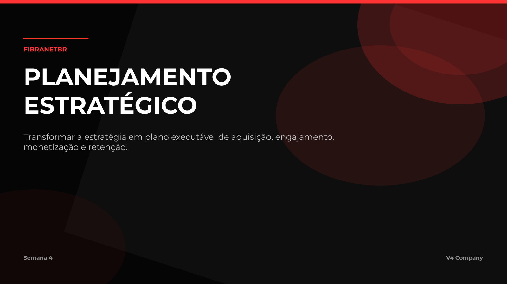
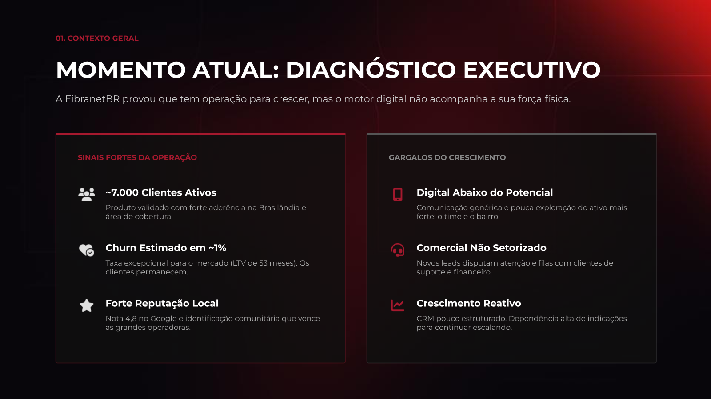
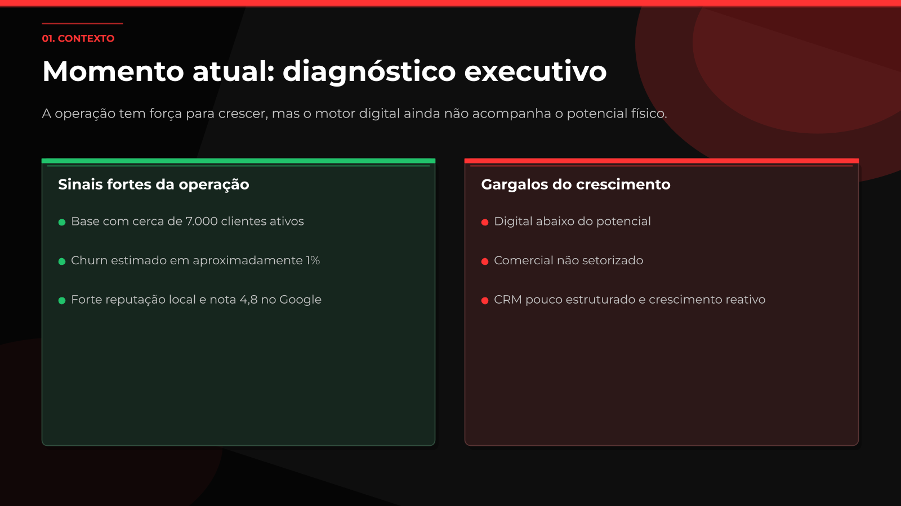

X9 / comparacao visual
Referencias vs vivid
Comparacao entre os dois decks de referencia enviados e a versao X9 vivid importada para Google Slides.



Minha leitura: o X9 vivid acertou o caminho tecnico da editabilidade. Agora precisa ganhar direcao de arte: cena visual, textura, grafismos, icones e layouts menos literais.